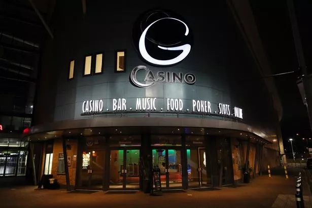

Grosvenor Casino, Coventry is more than just a casino, it's the perfect day and night leisure destination. With a fantastic restaurant, amazing bar, sports & entertainment lounge, great poker, and conference room. The casino is situated next door to the Doubletree by Hilton Hotel, offering the perfect venue for an overnight stay after an evening of entertainment. The Grosvenor Casino provides numerous Roulette, Blackjack, and Poker tables with popular slot games such as Cleopatra and Lucky Lady’s Charm, to make your gaming experience the best in town. Grosvenor Casino, Coventry is home to the Goliath poker tournament, the largest in the world outside of Las Vegas. Situated in Coventry Building Society Arena and alongside the Doubletree by Hilton Hotel, just a stone's throw from Birmingham.

Gambling.com expertly reviews and compares all UK online gambling operators, games, and products.
Find personalised recommendations of where to play responsibly and get your exclusive bonus now.
Casino
- 3 Card Poker
- Ultimate Texas Holdem
- Roullet
- Black Jack
Grosvenor Casino Coventry is more than just a Casino, it's the perfect day and night leisure destination with a fantastic restaurant, amazing bar, sports & entertainment lounge, great poker, conference room and much, much more. We have numerous Roulette, Blackjack and Poker tables with popular slot games like Cleopatra and Lucky Lady’s Charm to make your gaming experience the best in town. We’re also home to the Goliath poker tournament, the largest in the world outside of Las Vegas. Situated in the beautifully designed Ricoh Arena, our casino has the wow factor to make your evening a memorable one. Find us off the A444 where we will be happy to validate your ticket for free parking. Please note that our restaurant is closed on Monday and Tuesday. All the day menu is available from the bar on these days. Menu items may vary depending on concerts and events, please check with the club before making a booking - thank you.
Slots
PLAY SLOTS
Now you can explore and play online slots to your heart’s content at Grosvenor Casino. With so many online slots to choose from, you’ll discover stunning visuals, immersive gameplay, and the chance to win some real money jackpots. The options really are endless! You can choose Grosvenor Casinos originals. You can play slots like Starburst online and Fishin’ Frenzy and other classic slots. And don’t forget exciting all-time favourite games such as Cleopatra, Fluffy Favourites or Rainbow Riches. With so much on offer, you’re sure to find a game that will keep you entertained at our online casino. Our collection of slots and games feature slots that offer special features ranging from free spins and bonus games to daily jackpots and large multipliers. You can play slots online that can payout up to £250,000 on non-jackpot slots and over hundreds of thousands for progressive jackpot slots!
Poker Room
Get the upper hand for your next game with a two-hour private tournament. Pick up all the tips you need to bluff or play your way to victory. We’ll even give you a voucher so you can continue your poker experience at Grosvenor Casino Online when you get home.